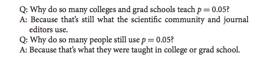
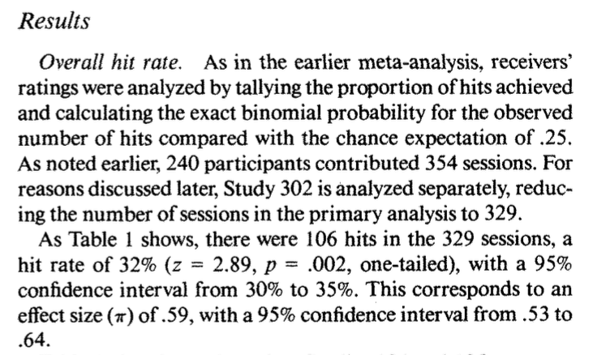
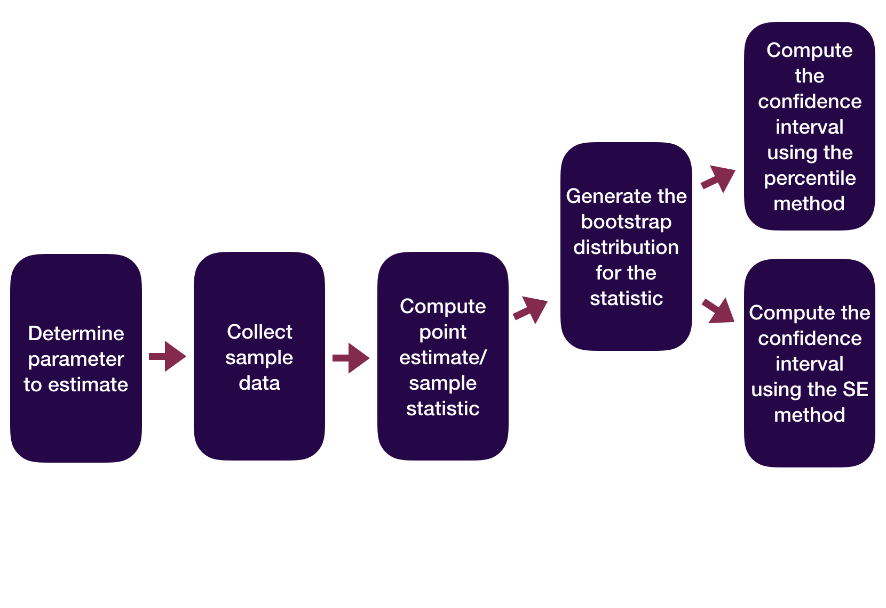
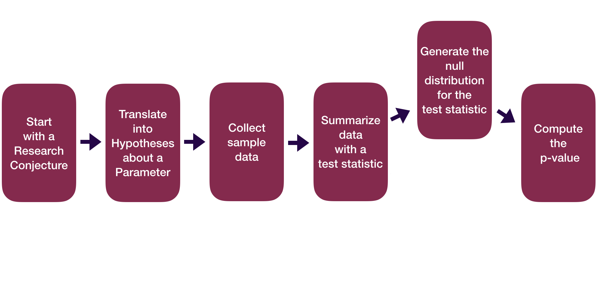
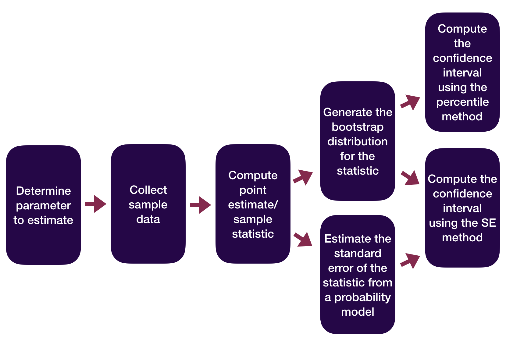
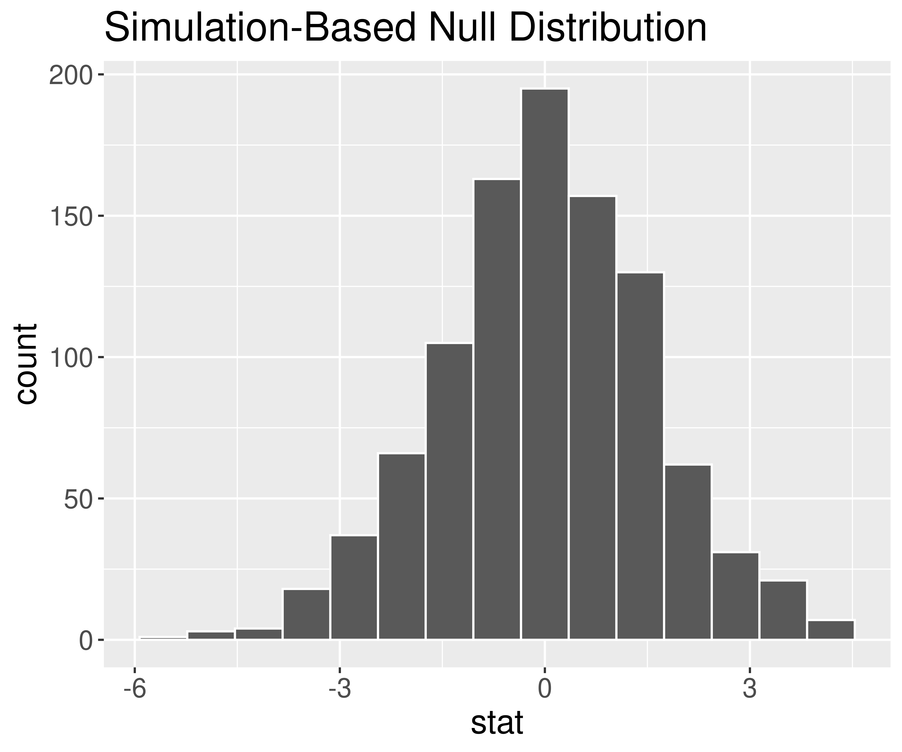
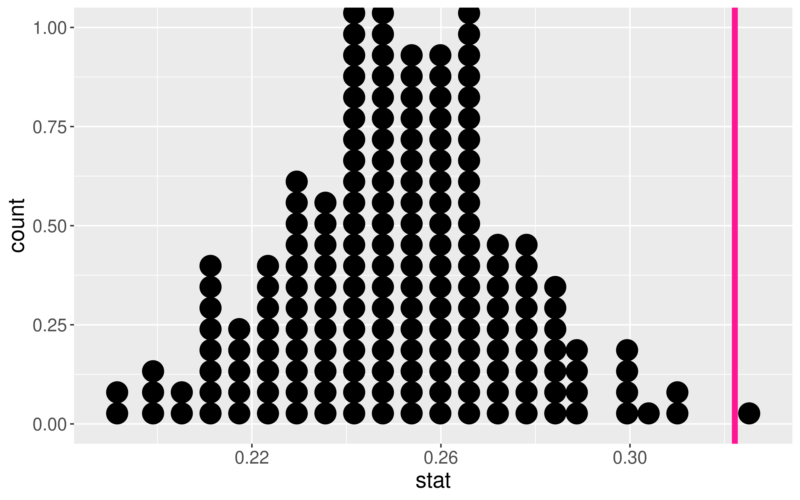

P-Value Pitfalls
Kelly McConville
Stat 100
Week 11 | Fall 2023
Announcements
- 🎉 We are now accepting Course Assistant/Teaching Fellow applications for Stat 100 for next semester. To apply, fill out this application by Nov 15th.
- You are all invited to the Info Session on Data Science Internships today at 4pm in SC 316!
Goals for Today
Finish discussion power
Statistical inference zoom out
A hearty p-values discussion
Key probability concepts
Which Flavor of Data Scientist Are You?
Data Visualizer
Data Wrangler
Model Builder
Inferencer
Thoughts on Power
What aspects of the test did the player actually have control over?
Why is it easier to set \(\alpha\) than to set \(\beta\) or power?
Considering power before conducting a study is very important!
The danger of under-powered studies
- EX: Turning right at a red light
Let’s Talk About P-values
The original intention of the p-value was as an informal measure to judge whether or not a researcher should take a second look.
But to create simple statistical manuals for practitioners, this informal measure quickly became a rule: “p-value < 0.05” = “statistically significant”.
What were/are the consequences of the “p-value < 0.05” = “statistically significant” rule?
Let’s Talk About P-values
- A consequence: The p-value is often misinterpreted to be the probability the null hypothesis is true.
- A p-value of 0.003 does not mean there’s a 0.3% chance that ESP doesn’t exist!
- By giving people a simple rule, they never learned what the p-value actually measures.
Let’s Talk About P-values
- A consequence: Researchers often put too much weight on the p-value and not enough weight on their domain knowledge/the plausibility of their conjecture.
- Sometimes we give more weight to things we don’t understand.
- xkcd comic
Let’s Talk About P-values
A consequence: P-hacking: Cherry-picking promising findings that are beyond this arbitrary threshold.

Let’s Talk About P-values
- A consequence: People conflate statistical significance with practical significance.
Example: A recent Nature study of 19,000+ people found that those who meet their spouses online…
Are less likely to divorce (p-value < 0.002)
Are more likely to have high marital satisfaction (p-value < 0.001)
BUT the estimated effect sizes were tiny.
- Divorce rate of 5.96% for those who met online versus 7.67% for those who met in-person.
- On a 7 point scale, happiness value of 5.64 for those who met online versus 5.48 for those who met in-person.
Question: Do these results provide compelling evidence that one should change their dating behavior?
Let’s Talk About P-values
A consequence: People conflate statistical significance with practical significance.
We won’t use the “statistically significant” language in Stat 100. Instead say “statistically discernible.”
Let’s Talk About P-values
The American Statistical Association created a set of principles to address misconceptions and misuse of p-values:
P-values can indicate how incompatible the data are with a specified statistical model.
P-values do not measure the probability that the studied hypothesis is true, or the probability that the data were produced by random chance alone.
Scientific conclusions and business or policy decisions should not be based only on whether or not a p-value passes a specific threshold (i.e. 0.05).
Proper inference requires full reporting and transparency.
A p-value, or statistical significance, does not measure the size of an effect or the importance of a result.
By itself, a p-value does not provide a good measure of evidence regarding a model or hypothesis.
Let’s Talk About P-values
Despite its issues, p-values are still quite popular and can still be a useful tool when used properly.
In 2014, George Cobb a professor from Mount Holyoke College poised the following questions (and answers):

- I want us to stop this cycle.
Stat 100 & P-Values
Understanding p-values and being able to interpret a p-value in context is a learning objective of Stat 100.
- Ex: If ESP doesn’t exist, the probability of guessing correctly on at least 106 out of 329 trials is 0.003.
Understanding that a small p-value means we have evidence for \(H_a\) is important.
- Ex: Because the p-value is small, we have evidence for ESP.
Understanding that a small p-value alone does not imply practical significance.
- Create a confidence interval to measure the effect size!
Understanding that what you mean by small should depend on your field and whether a Type I Error or Type II Error is worse for your particular research question.
Your ability to tell if a # is less than 0.05 is not a learning objective for Stat 100.
Reporting Results in Journal Articles

Statistical Inference Zoom Out – Estimation

Question: How did folks do inference before computers?
Statistical Inference Zoom Out – Testing

Question: How did folks do inference before computers?
Statistical Inference Zoom Out – Estimation

Question: How did folks do inference before computers?
Statistical Inference Zoom Out – Testing

Question: How did folks do inference before computers?
This means we need to learn about probability models!
Probability Models
“All models are wrong but some are useful.” – George Box
Question: How can we use theoretical probability models to approximate our (sampling) distributions?

Before we can answer that question, we need to learn some probability concepts that will help us understand these models.
Probability Concepts
Random process: outcomes is uncertain.
- EX: Roll 6 sided die.
The probability of an outcome is the “long-run proportion” of times the outcome occurs.
EX: Want probability of rolling the #5
- Let \(p_m\) = proportion of rolls that are 5 in \(m\) rolls
- Let \(p\) = probability of rolling 5 on a given roll = \(P\)(roll 5)
Law of Large Numbers (LLN) says that as \(m\) increases, \(p_m\) converges to \(p\).
Probability Concepts
Question: Why is the LLN important to us?
Answer: We’ve assuming \(p_m\) and \(p\) are essentially the same thing when computing p-values.
p-value = # of extreme test statistics/# of replications

LLN tells us the proportion of extreme test stats is roughly equal to the true probability of observing the test statistic or more extreme under \(H_o\).
Useful properties of probabilities:
The probability of an event is between 0 and 1:
\[0 \leq P(\mbox{event}) \leq 1\]
Probabilities: \(P(\mbox{event})\)
If two events are disjoints (have no outcomes in common), then
\[ P(\mbox{event 1 or event 2}) = P(\mbox{event 1}) + P(\mbox{event 1}). \]

We use this fact when we find a two-sided p-value.
Probabilities: \(P(\mbox{event})\)
Complement Rule:
\[ P(\mbox{event}) = 1 - P(\mbox{not that event}) = 1 - P(\mbox{event}^c) \]
Sometimes it is “easier” to find the complement event’s probability.

Random Variables
Random variable (RV) is a random process that takes on numerical values.
- Discrete RV: Takes on discrete values (countable number of possible values)
- EX: X = 1 if you are a morning person, 0 if not
- Continuous RV: Can take on any value in a interval
- EX: X = Amount of sugar in one cone of oatly soft-serve in the d-hall
Behavior of Random Variables
Random variables have probability functions that tell us the likelihood of specific values.
For discrete RV, probability function is:
\[ p(x) = P(X = x) \]
where \(\sum p(x) = 1\).
- Example: X = 1 if you are a morning person, 0 if not
Random Variables
For a discrete random variable, care about its:
Distribution: \(p(x) = P(X = x)\)
Center – Mean:
\[ \mu = \sum x p(x) \]
- Spread – Variance & Standard Deviation:
\[ \sigma^2 = \sum (x - \mu)^2 p(x) \]
\[ \sigma = \sqrt{ \sum (x - \mu)^2 p(x)} \]
Another Example:
Suppose 4 students have still not received their graded Stat 100 Midterm (yes, let’s pretend we actually have hand-written work) and that I hand back the exams randomly to each student. Let X = the number of students who get their correct exam.
Questions:
Let’s say the student’s names are A(licia), B(ob), C(olin), and D(onna) and they are sitting in a row ABCD. One possible outcome is ABDC (1st exam goes to A, 2nd to B, 3rd to D, 4th to C). In that case, what does X equal?
List out all possible outcomes. And for each outcome, determine what X equals.
Why is P(X = 3) = 0?
Write out the probability distribution for X.
Determine the mean value of X.
Determine the standard deviation of X.
What is the probability that at least one student gets their correct exam?
Reminders:
- 🎉 We are now accepting Course Assistant/Teaching Fellow applications for Stat 100 for next semester. To apply, fill out this application by Nov 15th.
- About 10-12 hours of work per week.
- Primary responsibilities: Attend weekly team meetings, lead a discussion section, hold office hours, grade assessments.
- About 10-12 hours of work per week.
- You are all invited to the Info Session on Data Science Internships today at 4pm in SC 316!